This paper seeks to demonstrate how the game data is stored within a PICO-8 cartridge, manifested as a 128×128, 13KB PNG file. The file's color channels steganographically store the game data at fixed positions of the image's canvas. I conclude with a preservation strategy to preserve the virtual gaming console PICO-8.
Celeste PICO-8
For demonstration, I focused on a proof-of-concept version of Celeste. This prototype version was made in PICO-8 for a game jam and went on to become one of the most popular American indie video games.
When archivists select which 2000s indie games are worthy of preservation, I predict many will include Celeste. An innovative, independently-developed video game that achieved mass acclaim and was lauded as a work of trans art. Awarded the Best Independent Game at the 2018 Game Awards (Wikipedia), Celeste has sold 2.2 million units on Steam (VGI). Critics praise Celeste's mechanics (IGN) and narrative (GameSpot); the countless attempts represent the player overcoming challenges to become their truest self. This is also reflected by the creator, Maddy Thorson, and her transition journey. The game's player character is Madeline and the creator told reporters that the character is trans (Maddy Makes Games). When the PICO-8 version was created, she had yet to transition.
{kind=link}
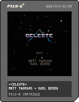
This demo file could be compared to an artist's sketchbook or a novelist's notebook. A preservationist would need to preserve this .png so that the game is still playable for future video game historians by maintaining a pixel-perfect copy, and retain its data integrity; they also must preserve the contingent PICO-8 gaming platform, and include within the description how to run the game, as well as credit the creator's chosen name.
Because of the game's significance, this analysis is focused on that game; however, the script should work for any PICO-8 games for the curious cryptographer.
Fixed Canvas Content Storage
The cartridge is designed to look like a Nintendo cartridge; however, the relevant data, a Lua script that runs the game, is encoded within the image's hex codes and is more significant than the visual content. The .png acts as a container, and because of a .png's lossless compression, this allows an extensible file format that is portable and well-compressed storage (W3C). Let's consider how the data embeds within the file.
The image steganographically embeds the data into each pixel's RGBA values: red, green, blue, and alpha (transparency). Four channels are essential for extracting 2×4=8 bits per byte. Roberto Vaccari's blogpost demonstrates from where relevant content is extracted (robertovaccari.com).
One of the most basic forms of image steganography is replacing the color channels least significant bits and store secret bits of information instead. Let's suppose that we have the following pixel in RGB format:RGB color (139, 81, 255)
- R: 10001011 = 139
- G: 01010001 = 81
- B: 11111111 = 255
We could insert the following secret bits (101010) replacing the last two bits of each channel.
- R: 10001010 → 138
- G: 01010010 → 82
- B: 11111110 → 254
The colors are different, but it's very hard to notice. If you were shown a picture which included the second shade of purple, it would look perfectly normal, especially if you haven't even seen the original in the first place.
{kind=link}
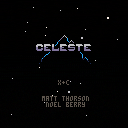
The relevant data exists within the least-significant bits of each pixel's color channel; these eight bits form one byte of data. Once extracted from the image, PICO-8 recompiles it into the Lua script.
Vaccari's analysis and his GitHub repository are the basis of my analysis (GitHub). This analysis deliberately overcomplicates his decompiler, a program that converts .p8.png files into Lua script, into a demonstrative program that prints out every step of the steganographic encoding to detail the extraction and decompiling steps otherwise stored, and deleted, in system memory.
The creator of PICO-8 explains how game cartridges work: “Instead of physical cartridges, programs made for PICO-8 are distributed on .png images that look like cartridges, complete with labels and a fixed 32k data capacity.” (lexaloffle)
When a .png is uploaded to PICO-8, the program:
- Extracts the bits in each pixel's color channel
- Adjoins them into byte strings
- Translates them into decimal notation
- Converts each decimal into an ASCII character
- Prints the Lua script and
- Runs the script (so the user can play the game)
This takes about 2 seconds, one second for steps 1–5, and another for step 6.
The game's data is within the black rectangle that says Celeste in the middle of the image. However, the decompiling program relies on the PICO-8 cartridge file, Figure 3.
{kind=link}
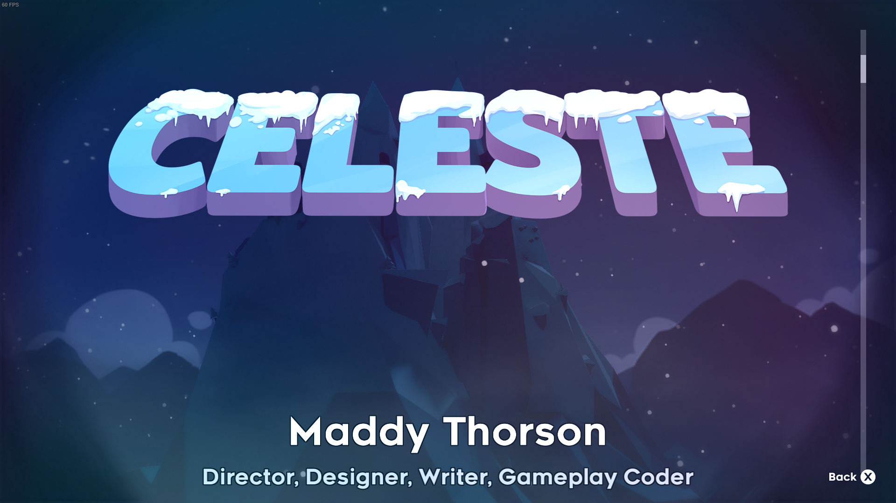
The decompiler script requires the cartridge frame image because it considers the pixel positions of the file; the script is looking for a 160 × 205 pixel image, or 32,800 pixels of information. Remember, the games can be 32KB in capacity. PICO-8 selects pre-defined byte regions to find the encoded game data.
From the PICO-8 Community Wiki, (pico-8.fandom.com)
• The first four bytes (0x4300-0x4303) are\x00pxa.
• The next two bytes (0x4304-0x4305) are the length of the decompressed code, stored MSB first.
• The next two bytes (0x4306-0x4307) are the length of the compressed data + 8 for this 8-byte header, stored MSB first.
• The remainder (0x4308-0x7fff) is the compressed data.
In other words, the game data is encoded within pixels of this region of Figure 4:
{kind=link}
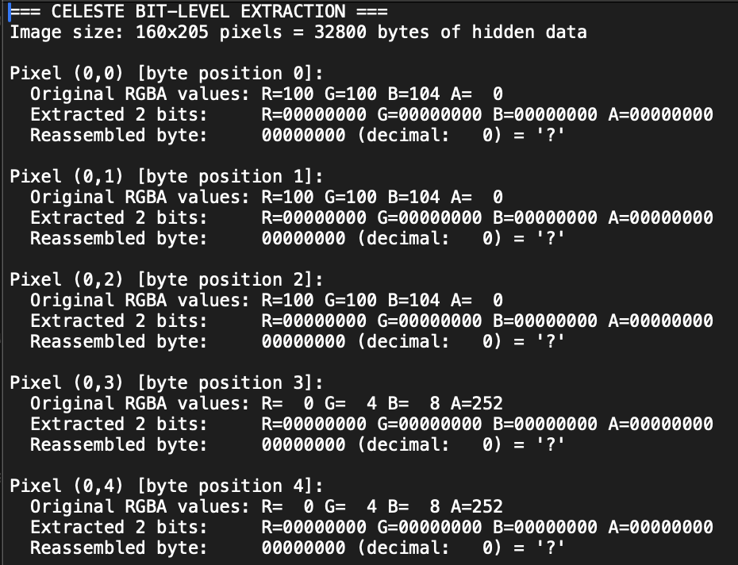
Bit Extraction
First, the decompiler script extracts bits from each four color values, as seen in Appendix 1.
{kind=link}
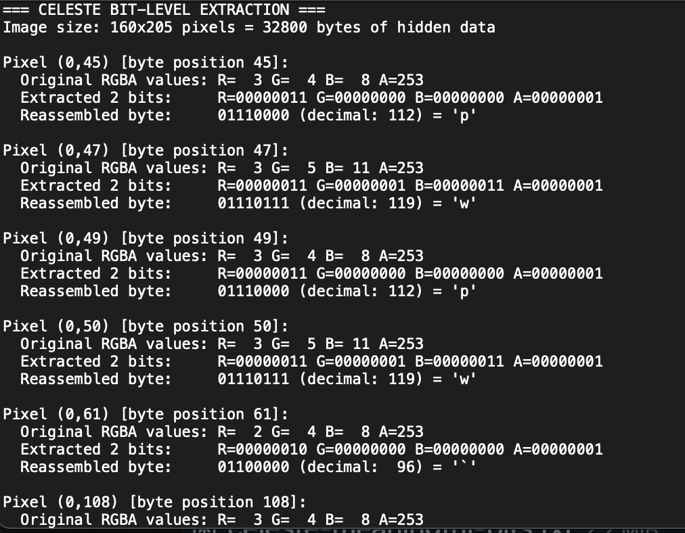
Each pixel stores one byte of data. Consider that Celeste does not use all of its 32k tokens. Here's a screenshot of the relevant extracted data from Appendix 2, filtering out the '?'.
{kind=link}
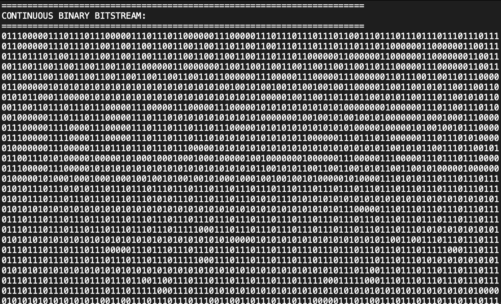
Once all of the bytes are reassembled, they're adjoined to output the file's bitstream, as seen in Appendix 3.
{kind=link}
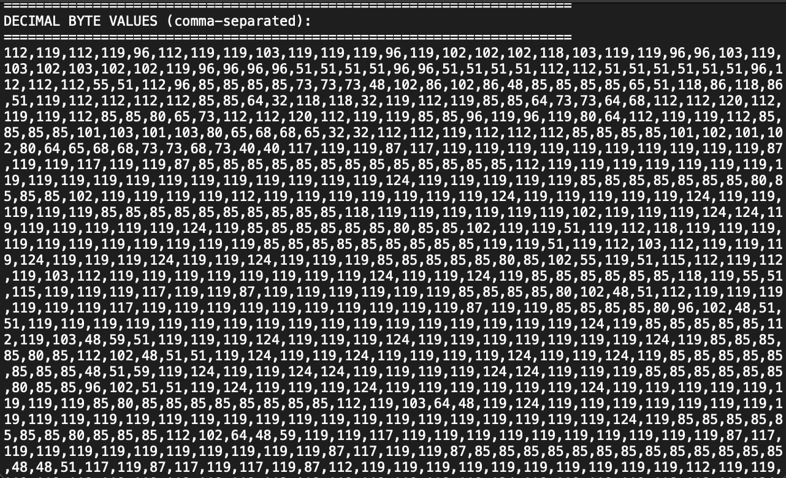
The game's data at the lowest levels of computation.
Byte Conversion
The bytes are converted to decimal values corresponding to ASCII encoding, “128 characters (control characters and graphic characters, such as letters, digits, and symbols) with their coded representation” (ASCII). This is why byte values do not exceed 127.
{kind=link}
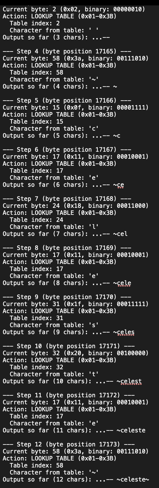
With the binary-coded decimal string and an ASCII lookup table, the decompiler writes the code character by character: select string, print corresponding ASCII character or execute a command reprinting data previously printed in the file, detailed in Appendix 4.
First, we see how the decompiler writes the title,
{kind=link}
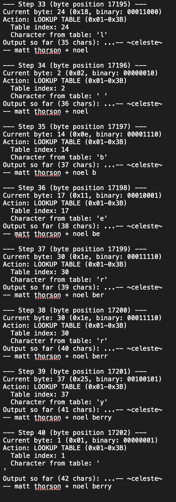
Then it continues to write the credits.
{kind=link}
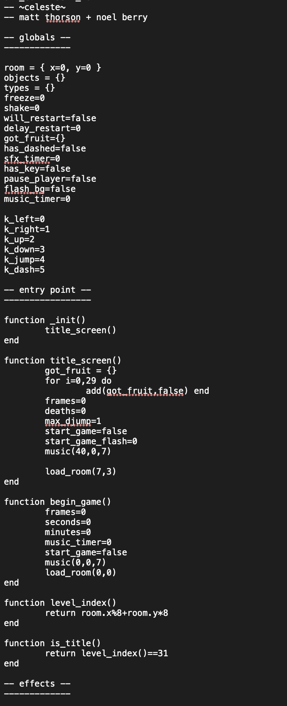
Lua Recompilation
In 5,889 total steps and 26,589 bytes of data to print the entire game script in Appendix 5, abridged below:
{kind=link}
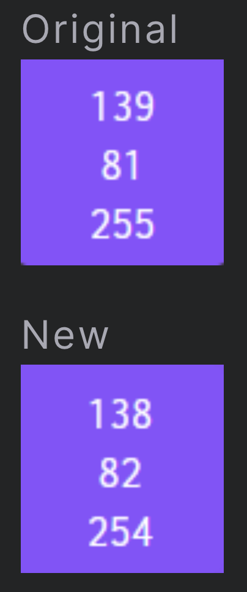
With the Celeste code from Appendix 5, a PICO-8 user could copy/paste it into the program's IDE and run the game. This process automatically happens when a user uploads a .png game cartridge.
{kind=link}
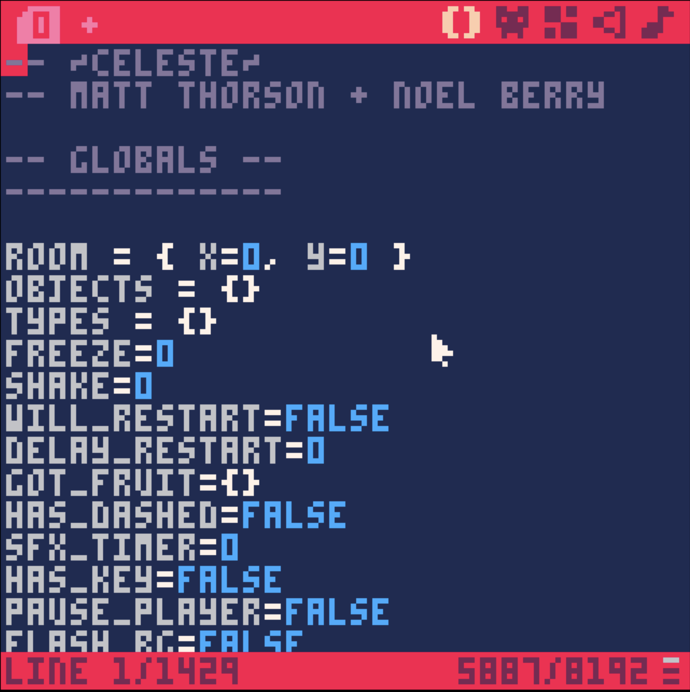
As plain text, the game's engine takes up more file space than the game's compressed image, with the text totaling 27KB of data. All this data, plus the game's sprites and maps are compressed into the 13KB game cartridge image. Imprinting the game into an image makes it more portable, compressed and archivable.
Preservation Strategy
The PICO-8 system automates this de/encoding, so emulation is required to preserve PICO-8 and run its games. No PICO-8: no games. If we just extract the image's Lua script, we're unable to run it without the PICO-8 system dependencies.
The PICO-8 game engine has a built in IDE, a color palette and sprite editor, map and sound engine. All of this functionality would need to be maintained for PICO-8 emulation. PICO-8 embeds art and sounds from a palette of possible assets, which does limit the amount of dependent files for preservation.
A preservationist would need an .iso disc image of the program and its operating system. A complete file structure for archiving PICO-8 and its games would include a disc image of the operating system that can run PICO-8 and a locally hosted folder of all the p8.png game cartridges. There is no physical controller, nor is any DRM on the games, so archiving PICO-8 may have less obstacles compared to a closed-environment game system with physical devices.
An archivist will need to preserve extensive documentation and metadata description of PICO-8. If PICO-8 source code is one day released or decompiled, the system can be continued to receive updates for new operating systems.
There's added complexity because of how many builds are officially supported,
“PICO-8 currently has builds for Mac, Windows and Linux (32, 64 bit), Raspberry Pi (32, 64 bit) and PocketCHIP.” (PICO-8)
Archiving each of these operating systems, the program install files, and open-source dependencies would be required. An institution may choose to limit scope by preserving the most popular operating systems (just Windows/Mac/Linux, skip the short lived PocketC.H.I.P. OS) and rely on archival OS repositories (like ArchiveOS.org).
Archiving solely game images would be significantly easier. The .png file is a maintained standard. A full digital preservation system would be equipped to host .png files and preserve pixel color values. A project called PICOAwesome is currently attempting to archive all of the games on the Internet Archive by scraping them from itch, but the project was stymied by copyright law (archive.org).
{kind=link}
Ultimately, emulation will be required for preserving these games because a PICO-8 cartridge is irrelevant when removed from the context of the program that runs it.
Acknowledgements
My analysis is an extension of Roberto Vaccari's blogpost and GitHub repo. Anthropic's Claude helped me edit those scripts. This was originally a paper for Dr. Emily Maemura's Digital Preservation class at the University of Illinois, and it was influenced by curricula from two other iSchool professors, Dr. Mathew Turk's lecture on DOS game encoding in Dr. Karen Wickett's Foundations of Digital Information.
Appendices
Appendix 1: CelesteP8 Pixel Extraction.txt
Appendix 2: CelesteP8 Meaningful Bits.txt
Appendix 3: CelesteP8 Bit Byte Streams.txt
Appendix 4: CelesteP8 Full Decompression.txt
Appendix 5: CelesteP8 Full Game Code.txt
Works Cited
Accessed 26 Oct. 2025.
American National Standard for Information Systems. Coded Character Sets – 7-Bit American National Standard Code for Information Interchange (7-Bit ASCII). ANSI, 1986, http://www.bitsavers.org/pdf/ansi/X3/X3.004-1986_7-Bit_ASCII.pdf.
“Celeste – Steam Stats.” Video Game Insights, https://staging1.sensortower.com/vgi.
“Celeste Review: More Than Just A Great Platformer.” GameSpot, https://www.gamespot.com/reviews/celeste-review-more-than-just-a-great-platformer/1900-6416843/.
Claude. “Decompiling Celeste game code” Anthropic, 26 Oct. 2025, claude.ai. Large language model.
“Is Madeline Canonically Trans?” Maddy Makes Games, https://maddymakesgames.com/articles/is_maddy_trans/index.html.
Marks, Tom. “Celeste Review.” IGN, 25 Jan. 2018, https://www.ign.com/articles/2018/01/25/celeste-review.
“P8PNGFileFormat.” PICO-8 Wiki, https://pico-8.fandom.com/wiki/P8PNGFileFormat.
PICO-8 Fantasy Console. https://www.lexaloffle.com/pico-8.php?page=faq.
RandomInSpace. “They finally changed the name :D.” Reddit Post. R/Celestegame, 30 Mar. 2021, https://www.reddit.com/r/celestegame/comments/mg4hrd/they_finally_changed_the_name_d/.
rvaccarim. Rvaccarim/P8png_decoder. 3 Jan. 2021, Python. 23 Jan. 2024. GitHub, https://github.com/rvaccarim/p8png_decoder.
“The Game Awards 2018.” Wikipedia, 15 Aug. 2025. Wikipedia, https://en.wikipedia.org/w/index.php?title=The_Game_Awards_2018&oldid=1305985151.
u/Voljega. PICOwesome v1.3 (Feb-28-2022). 28 Feb. 2022. Internet Archive, http://archive.org/details/picowesome-v1.3.
Vaccari, Roberto. Steganography: Decoding Pico-8 Cartridges. 3 Jan. 2021, https://robertovaccari.com/blog/2021_01_03_stegano_pico8/.
World Wide Web Consortium. Portable Network Graphics (PNG) Specification (Third Edition). W3C, 24 June 2025, https://www.w3.org/TR/png-3/.